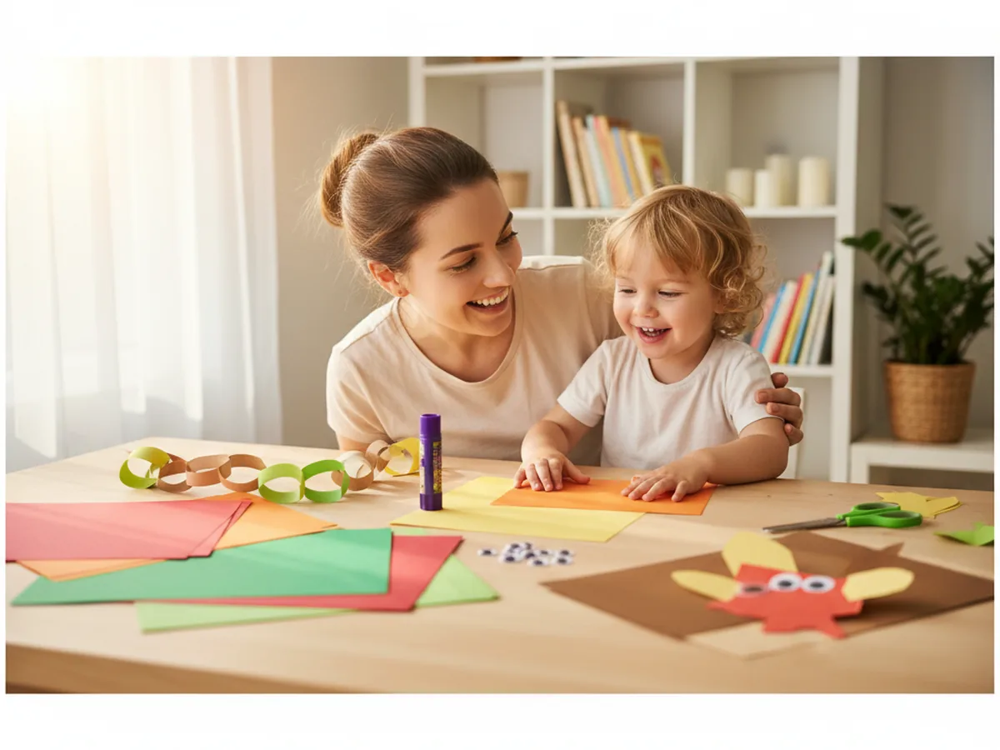
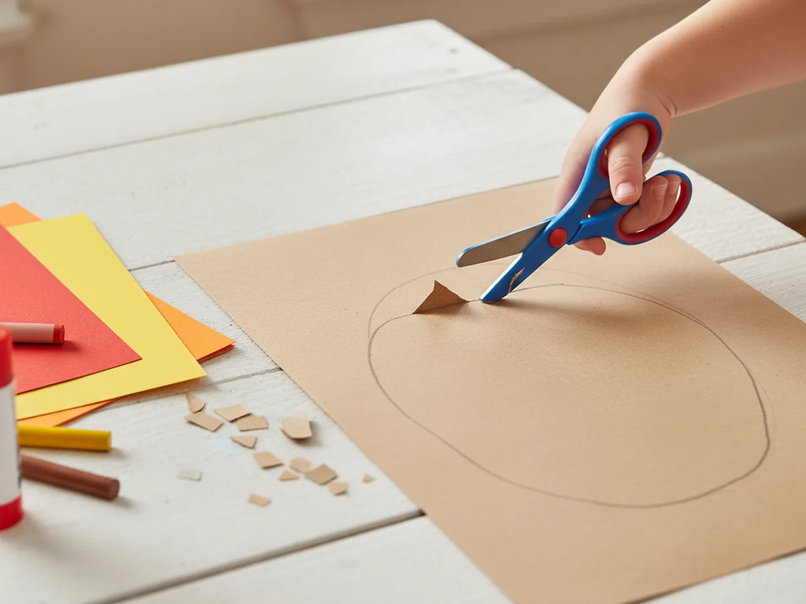
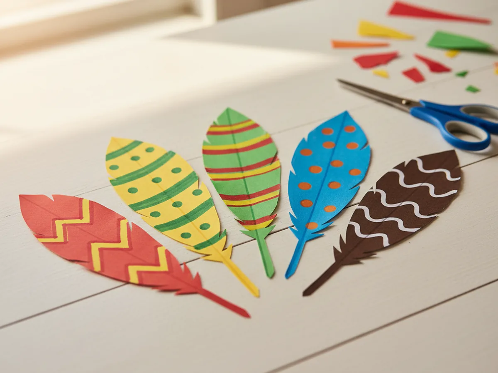
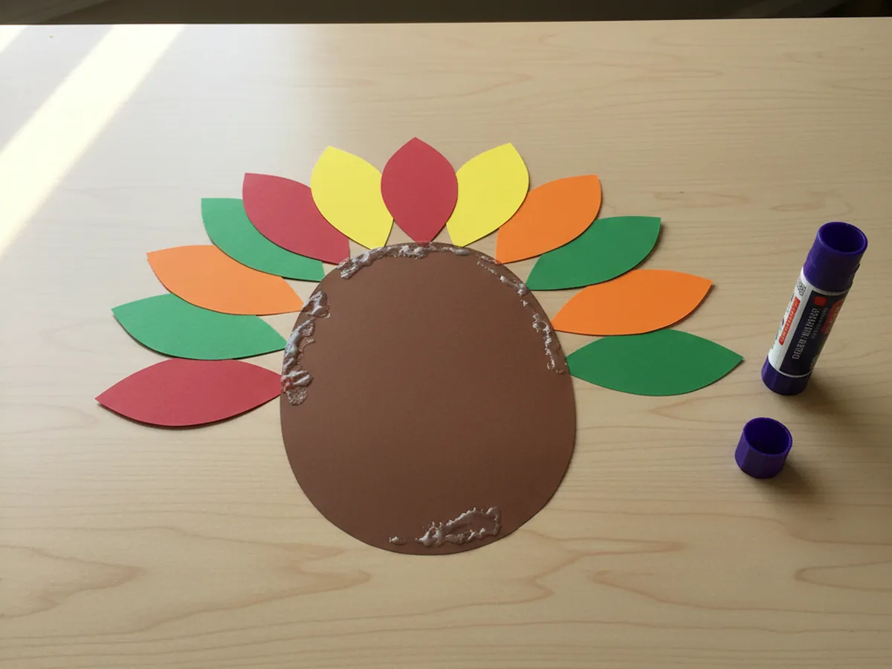
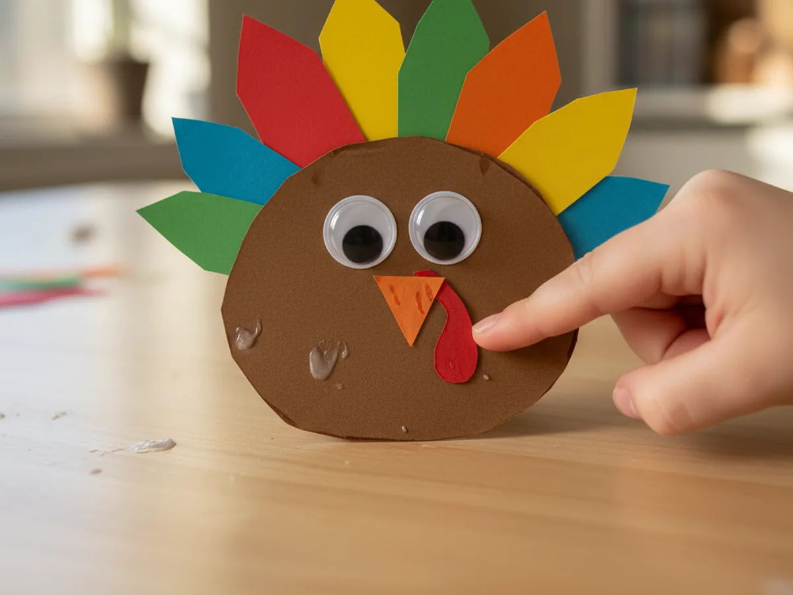
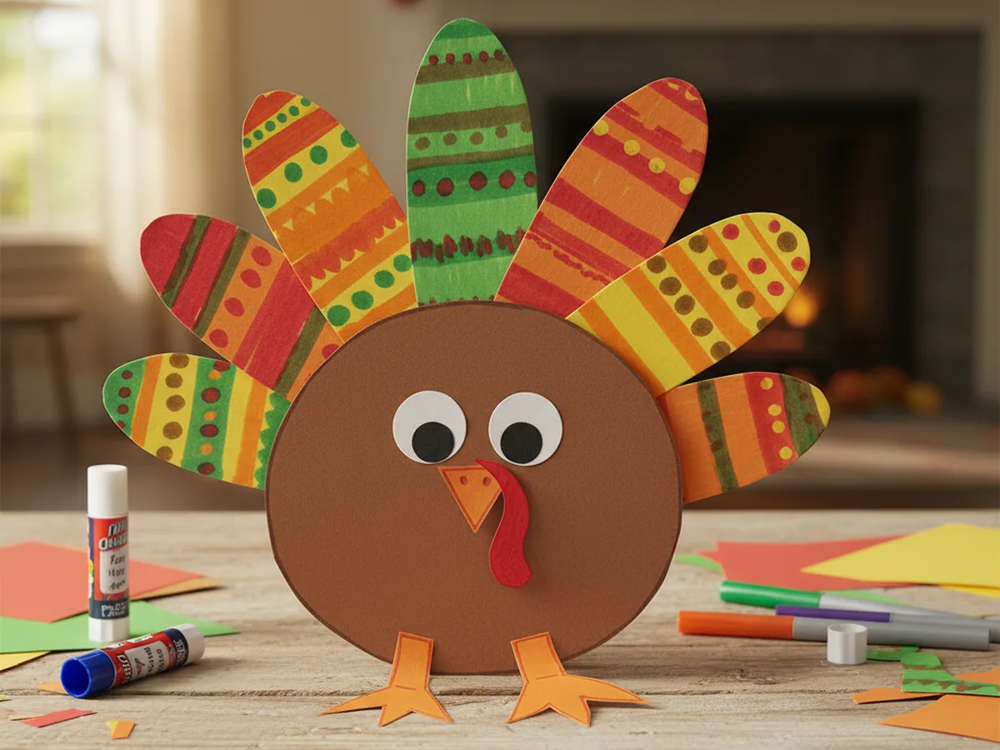

Thanksgiving is one of my favorite times to sit down with the kids and make something together, and this paper turkey craft has become a true family staple. It is made entirely from construction paper, takes about 30 minutes, and the result is genuinely adorable. Your little one gets to cut, color, arrange, and glue, and by the end, they have a proud little turkey to show off. No paint, no big mess, just a sweet afternoon project. 🦃
This is one of those crafts that works for a wide range of ages. A 3-year-old can glue and decorate while you handle the cutting. A 5- or 6-year-old can do almost all of it independently. And older kids can get really creative with the feather colors and patterns. No matter where your child is, there is a way into this project that feels fun and manageable.
Why Kids Love This Craft
There is something wonderfully satisfying about building a turkey from scratch. Kids love seeing the pieces come together: the brown body, the bright fan of feathers, the funny little face. It feels like magic to them, and honestly, it feels pretty good to us moms too.
This paper turkey craft for kids is also great for fine motor development. Cutting feather shapes, tearing paper into smaller pieces, pressing down googly eyes, and drawing marker details all give little fingers a real workout. These are exactly the kinds of skills preschoolers and kindergarteners need to build, but wrapped up in something that just feels like play.
The open-ended decorating step is another big win. Once the feathers are glued in place, kids can make the turkey entirely their own: bright purple feathers, rainbow stripes, glitter accents, you name it. Every turkey ends up looking different, which makes each child feel genuinely proud of what they made. This is the kind of simple paper turkey craft that ends up stuck to the fridge all November long.

What You'll Need
Here is everything you need to make this paper turkey craft. It is a nice short list, and most of it you probably already have at home.
- Crayola Construction Paper, assorted colors for feathers, beak, wattle, and feet.
- Brown construction paper, one sheet per turkey for the body (included in most assorted packs).
- Elmer's Washable Glue Sticks, for gluing all the paper pieces together cleanly.
- Self-Adhesive Googly Eyes, 2 per turkey, the wiggle kind makes the face extra cute.
- Fiskars Training Safety Scissors, great for little hands cutting feather shapes.
- Crayola Washable Markers, for adding lines and details to the feathers.
- A pencil, for tracing the turkey body shape before cutting.
Step-by-Step Instructions
Follow these five simple steps and you will have a finished turkey before you know it. 🎨
Step 1: Cut Out the Turkey Body
Start by drawing a large rounded oval shape on a piece of brown construction paper. Think of it as a slightly squashed circle, about the size of your child's fist or a bit bigger. This is the turkey's body. Have your child cut it out with their safety scissors, or trace the shape and pre-cut it yourself for younger toddlers.
The shape does not need to be perfect. A slightly wobbly oval just adds to the handmade charm, and kids feel genuinely proud when they manage the cutting themselves.

Step 2: Cut Out the Feathers
Now for the most colorful part. Cut several large teardrop shapes from red, orange, yellow, and green construction paper. Each feather should be a few inches long, like a fat leaf shape. You will need around 6 to 10 feathers total depending on how full you want the tail to look.
Encourage your child to decorate the feathers before gluing them. They can draw stripes, dots, or zigzag patterns with washable markers to give each feather its own personality. This step is a favorite because kids can be completely creative with no wrong answers.

Step 3: Glue the Feathers Behind the Body
Lay the brown turkey body on the table and arrange the feathers in a fan shape behind it, spreading them out like a real turkey tail. Once you are happy with the arrangement, flip each feather over and apply a dot of glue stick at the top end, then press it underneath the back edge of the body shape.
Work your way around until all the feathers are secured. Give it a gentle press down and let it sit for a minute. When you flip the whole thing over, you will see that gorgeous fanned tail peeking out from behind the body.

Step 4: Create the Turkey Face
Now let's give this turkey some personality! Peel the backing off two googly eyes and press them onto the upper half of the brown body. Then cut a small triangle from orange paper for the beak and glue it just below the eyes in the center. Finally, cut a small teardrop or elongated oval shape from red paper for the wattle (that funny dangly bit under a turkey's beak) and glue it hanging just below and to the side of the beak.
Kids love this step because suddenly their turkey looks alive. You can use a black marker to draw a simple curved smile under the beak, or let the turkey look as surprised or goofy as your child imagines it.

Step 5: Add Feet and Finishing Touches
To complete your paper turkey craft, cut two simple feet from orange construction paper. Each foot can be a small strip with three short snips cut at one end to create toes. Glue the feet to the bottom of the turkey body so they peek out below.
For the finishing touches, invite your child to add any extra details they like: a few drawn-on wing lines with a marker, a name on the back, or even a little paper hat. This is their turkey, and they should feel free to make it completely their own.

Variations to Try
Handprint Feathers: Instead of cutting out teardrop shapes, trace your child's hand on several colors of construction paper and cut them out. Each handprint becomes a feather, and the full fanned tail becomes a sweet keepsake that captures their tiny hands at this age.
Paper Bag Turkey Body: Swap the flat brown oval for a small brown paper bag stuffed loosely with crumpled newspaper. It creates a 3D turkey that stands upright on its own, which kids find endlessly exciting to display on a shelf or table.
Gratitude Turkey: Write one thing you are grateful for on each feather before gluing them in place. This turns the craft into a meaningful Thanksgiving tradition, and reading the feathers back together at the end makes for a genuinely warm family moment.
More Crafts You'll Love
If your little one enjoyed this project, here are two more fun paper crafts to try together.
Final Thoughts
This paper turkey craft is the kind of project that makes a regular afternoon feel a little more special. It is low-stress, low-mess, and genuinely fun for kids of all ages. Whether you make one together the week before Thanksgiving or turn it into a group activity with cousins or classmates, the result is always a cheerful little turkey worth celebrating.
I hope you and your little one have the best time making this together. Happy crafting! 🍂